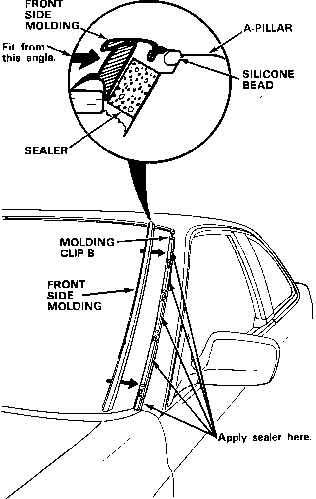

Windshield Side Molding - Whine or Hum
September 27, 198787-026
YEAR: '87-'88
MODEL: LEGEND COUPE
APPLICATION: ALL
Legend Coupe Wind Noise
PROBLEM
A "whine" or "hum" windshield side molding when the car is driven at highway speeds in high ambient temperatures.
NOTE:
The speed at which the noise is heard may be affected by strong head or tail wind.
DIAGNOSIS
NOTE:
^ Use method 3 if the noise cannot be verified at speeds below the speed limit applicable in your test area, or when the ambient temperature is low.
^ When using method 1, you will need an assistant to push on the passenger side of the windshield.
Method No. 1:
Test drive the car; when the noise is audible, push against the side of the windshield at several locations. If the noise changes in pitch or volume, the windshield side molding is the cause.
Method No. 2:
Mask off the windshield side molding by applying tape along the molding's inner and outer edges. Test drive the car. If the noise is no longer audible, the windshield side molding is the cause.
Method No. 3:
With your assistant inside the car, direct compressed air under the upper edge of the windshield side molding. While testing, hold your air nozzle about one-half inch from the molding and move it up and down the windshield. If an amplified version of the noise is audible inside the car, the windshield side molding is the cause.
CORRECTIVE ACTION
NOTE:
Even if only one side is making noise, perform the corrective action on both sides.

1. Remove the windshield side moldings as shown in the service manual.
2. Thoroughly clean the surface on the A-pillar between all the molding clips with 3M General Purpose Cleaner, or equivalent.
3. Cut strips of EPT sealer and fit them between the molding clips.
4. Apply a bead of black 3M Super Silicone Sealant on the underside of the front side molding, as shown above.
NOTE:
Fit the molding from the angle shown. Make sure the EPT strips are compressed before you clip the molding in place.
PARTS INFORMATION
EPT 10T (P/N: 06990-SA5-000)
3M General Purpose Adhesive Cleaner (3M P/N: 08984)
Black 3M Super Silicone Sealer (3M P/N: 08664)
WARRANTY CLAIM INFORMATION
Operation number: 831000
Flat rate time: 0.8 hour for both sides
Failed P/N: 73152-SGO-023 (side molding, right)
Defect code: 042
Contention code: B07